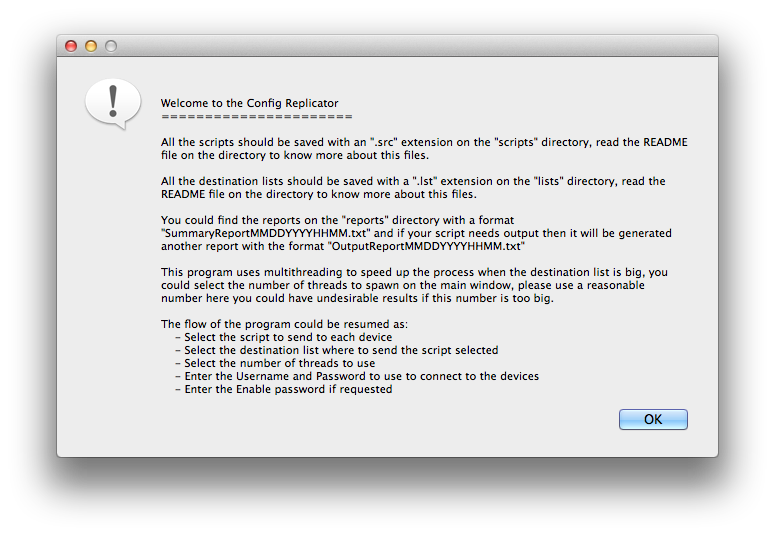
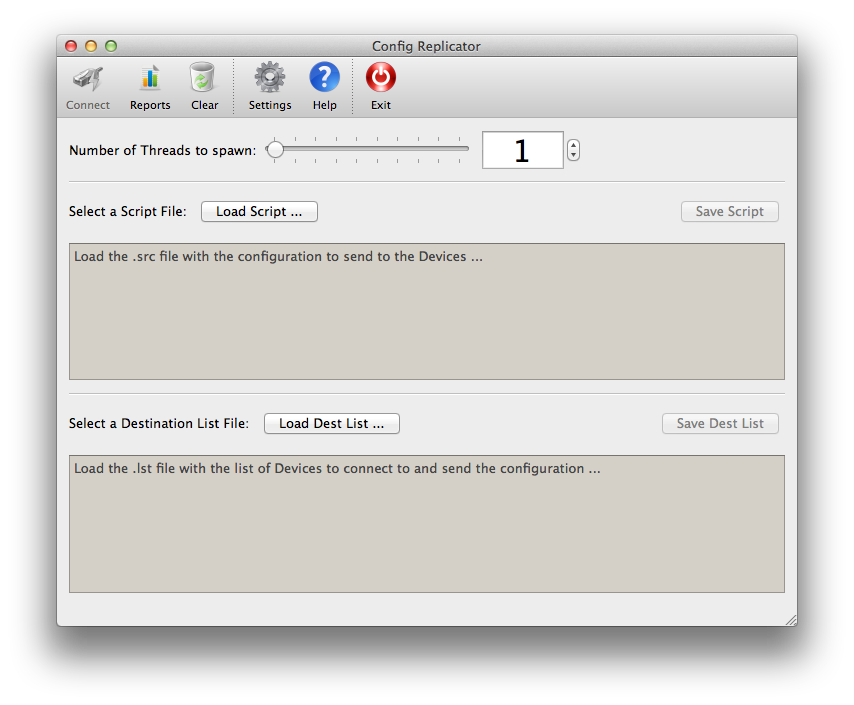
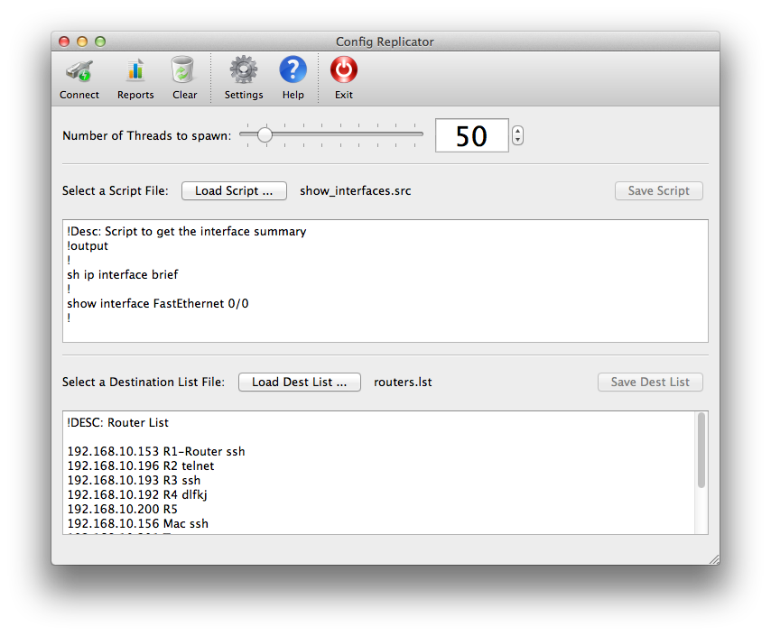
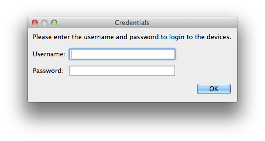
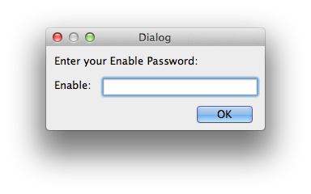
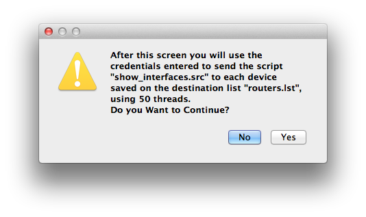
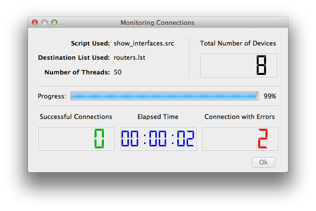
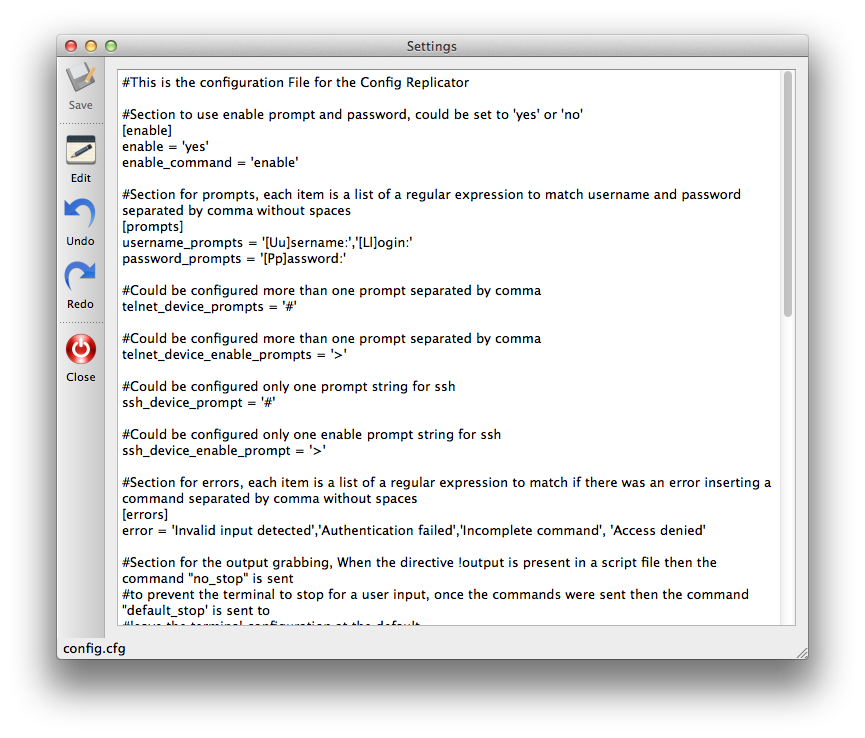
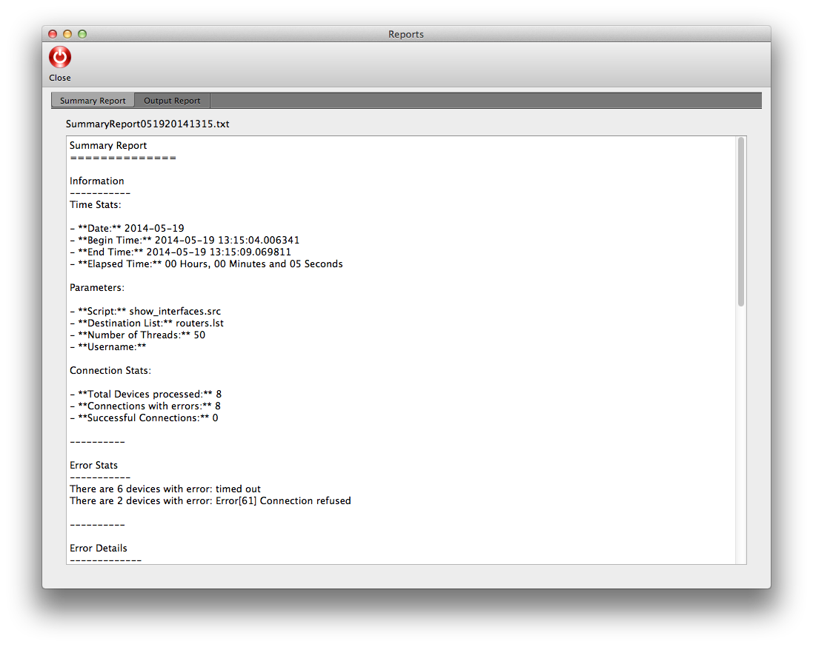
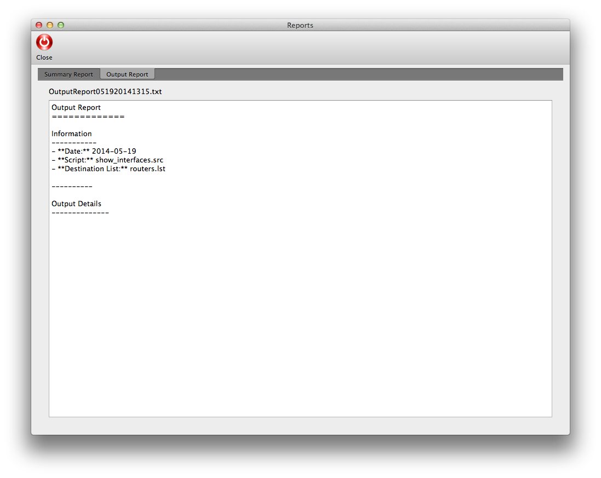

The Config Replicator GUI basically has the same flow of the text-based, but with a nice GUI and a more intuitive use flow.
The first Dialog just warns you about what the program does and which is the flow that uses.
From here you will land in the main window where you will do almost everything in the program
In the main window you will see a toolbar and three main areas, the first area is at the top and you could choose the number of threads to use to speed up the process, the number of threads is limited to 500 but you should do a check first in order to avoid undesirable results. The next area is where you could choose the script to use, the rules for the scripts are the same that in the text-based program, you could edit the script with the gui and save it on the same file or in a new one with the button “Save Script”, in the last area you could choose the destination list as in the scripts the same rules applys and you could edit the list and save it on the same file or in a new one with the button “Save Dest List”
On the toolbar you could see a number of icons that are described below:

- Connect: Used to connect to the devices using the script, list and number of threads selected, this button wont be activated unless you choose the script and destination list.
- Reports: Here you could see the reports generated after a run, that means that you should select the script, the destination list and press connect, when you return to this window you could launch the reports.
- Clear: With this button you clear everything to begin again.
- Settings: With this button you could edit the config.cfg.
- Help: The help button
- Exit: To exit the program
Once all the areas were filled and the “Connect” button pressed you will be prompted for the credentials to connect to the devices and the enable password if was configured on the settings.
 Then there will be a warning reminding you that doing this could be dangerous.
Then the monitoring window will appear
On the monitoring window you will see in real time the progress of the connection, the number of devices with errors, and the number of successful conenctions as the elapsed time. Once all the connections are done the “Ok” button will activate and you could return to the main window.
On the settings window you could edit the config.cfg file, you should press “Edit” to begin to make changes on the file and “Save” to save it
Once the running is done and you close the monitoring window you could press “reports” to see the generated reports as shown in the figures below:
 